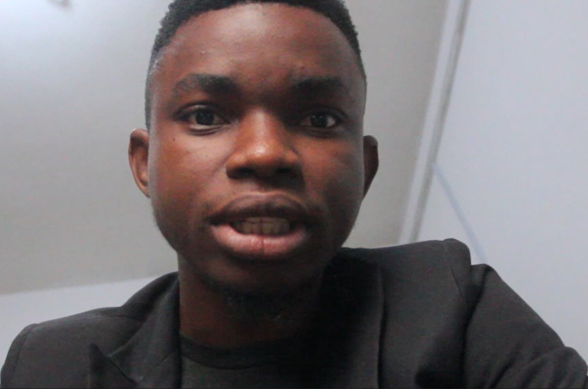

Babayemi Paul

Summary
I am an adaptable, hardworking, and responsible graduate.
I am industrious, smart and logical in approaching problems for solution.
Education
- First School Leaving Certificate 2008
- West African Senior School Certificate (WAEC) 2015
- Bachelor of Agriculture in Aquaculture and Fishery (UI) 2021
Work Experience
- Data analyst at Seyi Makinde call center 2018-2021.
- Assistant supervisor, Oyo state palliative distribution,
Egbeda,Lagelu, Irepo, Local Government 2020.
- Aquatech College of Agriculture and Technology Ring road Ibadan 2022.
- Group Antenatal data collection and qualitative data transcription in Lagos State 2022.
Skills
- Equipped with knowledge of Microsoft word, Excel and Powerpoint
- Equipped with knowledge of photoshop
- Also equipped with the knowledge of fishery